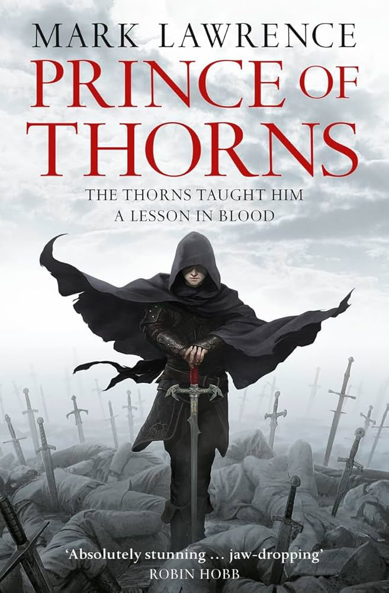

¿Qué reviso?
En este apartado encontrarás reseñas de libros, películas, y juegos en base a mi experiencia y opinion peronal.
Con un breve resumen y mi opinión personal con una clasica califiación del 1 al 10.
Se aceptan contraargumentos, opiniones y sugerencias.
Prince of Thorns – Novela de Mark Lawrence
Publicado: 9 de mayo de 2025

La histora se centra en una travesía sangrienta y vengativa de un joven principe, Jorg Ancrath, el cual ha vivido el asesinato de su madre y su hermano menor, volviendolo una
persona fria, llena de rencor y odio. En un mundo de fantasía oscura pos-apocaliptica, donde la humanidad regresa a la Edad Media.
Es una historia oscura y violenta, una lectura que no es para todos, pero con una trama que en sus momentos te puede dejar encganchado.
Este libro es parte de una triología, el cual se centran en el mismo personaje. Aunque solo el primero de ellos ha sido traducido al español.
En cuanto al protagonista, desde el momento en el que se te presenta, admite varios crimenes de asesinato, robo, e incluso violación, y poco después
procede a asesinar a uno de sus "Hermanos" friamente solo por que "Se cruzo en un mal momento", mostrando la personalidad sanguinaria del personaje.
Y a lo largo de la historia, se sigue mostrando y explorando su complejidad de emociones.
Si bien, empece este libro por ser del genero de fantasía oscura, y el cual es de mis favoritos. Y a pesar de el haberme advertido de su tematica, el cual al principio no me convenció,
decidi seguir la historia, la cual me enganchó con sus momentos de acción, y la complejidad del protagonista. Apesar de ser una triología, la historia funciona por si sola.
He decidido leer las continuaciónes en otro momento, ya que vi que son mucho mas largos este, pero no he abandonado la idea de leerlos.
En cuanto a la calificación, le dare un 7.5/10. La historia es interesante, y el protagonista esta bien desarrollado, aunque no haya sido totalmente de mi personal agrado.
Aun así he podido disfrutar de él y su complejidad.